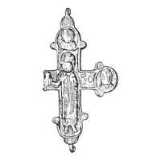

Catalog › CE-0881 · KOR2003-II.3.1.4
Valvă de față cu prinț cu model de biserică în mâna dreaptă, medalion stâng rupt
sec. XII (1101–1200) · Vîșhorod, raionul Kiev-Sviatoșîn, regiunea Kiev, Ucraina
single valve of a reliquary cross, aramă; c. XII (1101–1200); found at Vîșhorod, raionul Kiev-Sviatoșîn, regiunea Kiev, Ucraina.


Identificare
- Categorie
- Valvă izolată
- Material
- Aramă
- Tehnică
- Turnare în relief
- Stare
- Fragmentară
- Dimensiuni
- Î 60 × L 40 mm
Iconografie
- Avers
- Sf. Boris și Gleb
- Descriere avers
- Valva de față; medalionul din stânga rupt. Imaginile prințului cu model de biserică în mâna dreaptă și ale sfinților în medalioane sunt foarte schematice, netezite (sau șterse?). Inscripție adâncită, la dreapta figurii centrale: БӨ.
- Inscripții
- БӨ
- Limba
- Slavonă
Datare și atribuire
- Datare
- sec. XII (1101–1200)
- Centru
- Necunoscut
- Tipologie
- Korzukhina–Peskova 2003, tip II 3 1
Descoperire
- Localitate
- Vîșhorod
- Regiune
- raionul Kiev-Sviatoșîn, regiunea Kiev
- Țară
- Ucraina
- Context
- Fortificație
Păstrare și referințe
- Bibliografie
- G. F. Korzukhina, A. A. Peskova, Древнерусские энколпионы. Нагрудные кресты-реликварии XI–XIII вв., Sankt-Petersburg, 2003 [Korzukhina–Peskova 2003], p. 88, cat. nr. II 3 1/4, reprodusă la Табл. 40 (planșe, p. 282). Bibliografie citată în sursă: Довженок 1950, табл. VII, 15; Шовкопляс 2000, 184, рис. 1, 6.
- Figura
- Табл. 40
- Planșe
- Korzukhina–Peskova 2003, Табл. 40 (planșă fără paginație proprie în PDF; p. 282 tipărită)
- Observații
- Datare după Peskova: sec. XII. Circumstanțe: Săpături pe fortificație, 1934–1937, F. N. Molceanovski. Proveniență în colecție: locul de păstrare necunoscut (considerat pierdut în timpul războiului). Dimensiuni: l 4,0 cm — lățimea părții păstrate a valvei. Material: aramă; turnare. Desen după Dovjenok 1950. Coordonate: nu sunt date în sursă.
Citare: Corpus Encolpiorum, CE-0881, Valvă de față cu prinț cu model de biserică în mâna dreaptă, medalion stâng rupt, https://vitaliejosanu1979-ux.github.io/primul-meu-proiect/piese/KOR2003-II.3.1.4/ (accesat 2026-10-17).